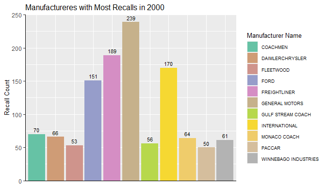

The caRecall package is an API wrapper for the Government of Canada Vehicle Recalls Database (VRD) used by the Defect Investigations and Recalls Division for vehicles, tires, and child car seats. The API wrapper provides access to recall summary information searched using make, model, and year range, as well as detailed recall information searched using recall number.
The package focuses on querying data from the VRD API to return the following:
- Recall summary information
- Recall counts
- Detailed recall information
Installation
The development version of the caRecall package can be installed from GitHub with:
# install.packages("devtools")
devtools::install_github("WraySmith/caRecall")Usage
More documentation on caRecall can found at: https://wraysmith.github.io/caRecall/
Note that an API key is required to run the functions in caRecall and query the Vehicle Recalls Database. The key can be acquired at https://tc.api.canada.ca/en/detail?api=VRDB.
A simple example of using the recall_by_years() function in the package to return all recalls manufactured in 2000 could be done as follows:
recall_summary_2000 <- recall_by_years(start_year = 2000, end_year = 2000, limit = 3000)
recall_summary_2000
#> # A tibble: 2,422 x 6
#> `Recall number` `Manufacturer N~ `Model name` `Make name` Year `Recall date`
#> <chr> <chr> <chr> <chr> <int> <date>
#> 1 1993076 MERCEDES-BENZ 300 MERCEDES-B~ 2000 1993-05-31
#> 2 1999056 FIAT CHRYSLER A~ NEON CHRYSLER 2000 1999-04-14
#> 3 1999108 FIAT CHRYSLER A~ NEON CHRYSLER 2000 1999-06-07
#> 4 1999111 FLEETWOOD TIOGA FLEETWOOD 2000 1999-06-08
#> 5 1999137 POLARIS SNOWMOBILE POLARIS 2000 1999-07-26
#> 6 1999138 MAZDA MPV MAZDA 2000 1999-07-27
#> 7 1999147 MAZDA MPV MAZDA 2000 1999-07-30
#> 8 1999151 GENERAL MOTORS S10 CHEVROLET 2000 1999-08-16
#> 9 1999151 GENERAL MOTORS SONOMA GMC 2000 1999-08-16
#> 10 1999155 GENERAL MOTORS SUNFIRE PONTIAC 2000 1999-08-19
#> # ... with 2,412 more rowsThe data could then be used to summarize manufacturers with the highest recall counts in the year:

Additionally, detailed recall information can be queried from the API using the recall_details() function:
recall_windstar <- recall_details(1997118)
tibble(t(recall_windstar)) #transpose for readability here
#> # A tibble: 15 x 1
#> `t(recall_windstar)`[,1]
#> <chr>
#> 1 "1997118"
#> 2 "97S69"
#> 3 "Light Truck & Van"
#> 4 "Camionnette et fourgonnette"
#> 5 "WINDSTAR"
#> 6 "FORD"
#> 7 "27"
#> 8 "Seats And Restraints"
#> 9 "Sièges et dispositifs de retenue"
#> 10 "Safety Mfr"
#> 11 "Sécurité - fabricant"
#> 12 "NOTE: VEHICLES EQUIPPED WITH SECOND ROW BENCH SEATS AND INTEGRATED CHILD SE~
#> 13 "NOTA : Vise les véhicules équipés d’une seconde banquette et du siège intég~
#> 14 "1998"
#> 15 "1997-06-16"Getting Help or Reporting an Issue
To report bugs/issues/feature requests, please file an issue.
These are very welcome!
How to Contribute
If you would like to contribute to the package, please see our CONTRIBUTING guidelines.
Please note that this project is released with a Contributor Code of Conduct. By participating in this project you agree to abide by its terms.